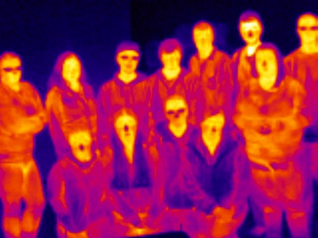

TEACHING
I am an assistant professor in the Department of Physics and Astronomy at Ithaca College. Teaching is an important aspect of my career. My goal is to realize the teacher-scholar ideal: combining an active research program with best practice teaching methods to provide students both state of the science knowledge and problem-solving skills.
I teach classes across the physics curriculum and an Integrated Core Curriculum course on the science and politics of climate change. Physics courses that I have taught include:

Above, my Climate Change Science class as viewed in the infrared.
I provide students opportunities to apply their learned knowledge and develop new skills while performing state of the science research. When possible, I help students see a project through the entire scientific process from the generation of a research question to the distribution of results through presentations and publication.
Many of my research projects are supported by external funding. These projects offer the opportunity to use state of the science technology, collaborate with colleagues at other schools, and interact with the community. Examples of previous student projects include quantifying methane emissions from New York State landfills and dairy farms, creating a climate reconstruction using Champlain Valley tree cores, analyzing Adirondack snow chemistry, simulationg the impacts of NOx reductions on U.S. air quality, collecting observations to predict the future climate of Lake Champlain in a warmer world, simulating the impact of aerosol emissions on drought, and an estimating the carbon flux from Lake Champlain.
Older
I have been participating in the creation and implementation of the Common Problem Pedagogy (CP2) at SUNY Plattsburgh. CP2 brings together two classes, from differing fields, to study a problem. The goal is for students to work together, synthesizing their knowledge and skills to more effectively solve problems. Support for the Common Problem Pedagogy at SUNY Plattsburgh has been obtained from the Teagle Foundation and the SUNY Performance and Improvement fund. Additional support is currently being requested through a multi-instituion proposal to the National Science Foundation and the National Endowment for the Humanities.
In Fall 2016 my atmospheric science class collaborated with Gary Kroll's U.S. Environmental History class to study and develop methods to interact with climate skeptics.
InTeGrate Module - Regulating Carbon Emissions
I helped create a teaching module for the Interdisciplinary Teaching about Earth for a Sustainable Future (InTeGrate program of the Science Education Resource Center at Carleton College. The three week module presents the science, economics, and policy options surrounding the regulation of carbon emissions in the United States to address climate change. The module was developed in collaboration with social scientists and economists, including Curt Gervich (SUNY Plattsburgh), Sandra Penny (The Sage Colleges), Robyn Smyth (Bard), Gautam Sethi (Bard), and Pinar Batur (Vassar).
Above, my Climate Change Science class as viewed in the infrared.